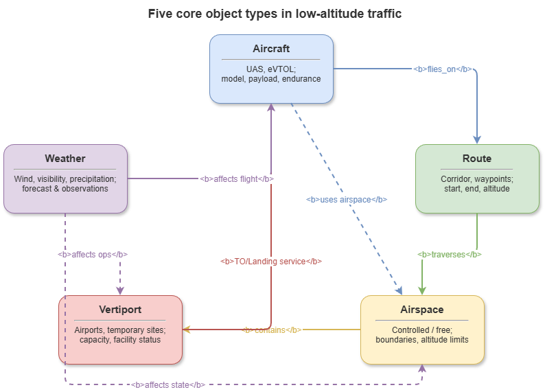
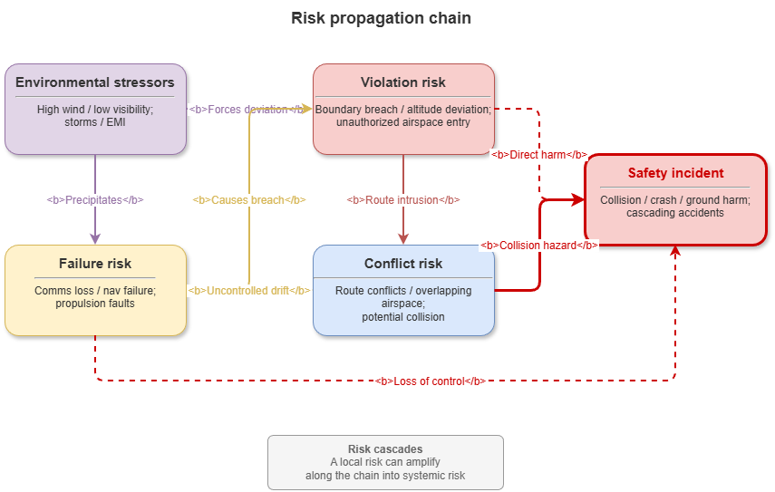
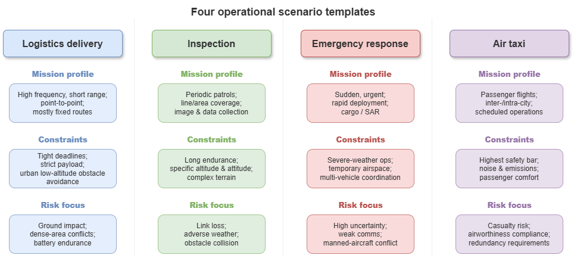

5.1 Object system for low-altitude traffic / UAM: aircraft, airspace, missions, infrastructure, stakeholders#
Trustworthy governance of low-altitude traffic begins with answering what objects the system contains. Compared with traditional civil aviation, low-altitude traffic and urban air mobility (UAM) involve diverse operators, complex mission types, rapidly changing airspace, and fine-grained rules—so domain knowledge cannot revolve around aircraft alone. A unified semantic system must cover five classes: aircraft—airspace—missions—infrastructure—stakeholders. That object system underpins later risk identification, rule-based reasoning, and governance decisions, and is prerequisite for heterogeneous data fusion, cross-stakeholder coordination, and interpretable inference.
Aircraft objects are the core carriers. Low-altitude aircraft include multi-rotor UAS, fixed-wing UAS, hybrid configurations, eVTOL, manned/unmanned cooperative platforms, and specialized mission types. Modeling must go beyond static “equipment records” to multi-dimensional knowledge: identity (ID, registration, model, operator); capability (range, endurance, payload, cruise speed, obstacle avoidance, communications); state (position, velocity, attitude, battery, mission status, health); compliance (flight class, permitted scope, remote ID, certification, operating conditions). The aim is to judge, from capability and state, whether an aircraft is fit for a spatiotemporal mission context and to support conflict prediction, violation detection, and dispatch optimization.
Airspace objects are the environmental substrate. Low-altitude airspace is not uniform, static, or open—it is multi-layered, highly dynamic, and strongly constrained. Modeling should cover spatial bounds, vertical strata, access rights, open/closed status, restriction levels, and occupancy semantics. Classes may include open areas, restricted zones, no-fly areas, temporary control volumes, priority corridors, and—specifically for UAM—air corridors, 3D nodes, transition volumes, holding areas, and vertiport buffer space. Elevating airspace from “pure geometry” to an operational object combining rules, resources, and control enables rule reasoning and spatial conflict adjudication in trustworthy governance.
Mission objects encode intent. Unlike classical ATM centered on flight plans alone, low-altitude missions are diverse, goal-flexible, and highly contextual. Typical attributes: mission ID, category, origin/destination, timing requirements, route plans, payload needs, execution priority, service level, risk tier. Different mission types imply different operational logic and governance—logistics stresses path efficiency and timeliness; inspection stresses areal coverage and low-speed stability; emergency stresses priority and dynamic replanning; air taxi stresses safety margin, passenger service, and high-density scheduling. Binding flight behavior to operational purpose supports explaining why an aircraft enters a region, why it receives higher priority, and why specific responses apply when risk appears.
Infrastructure objects ground operations. Low-altitude traffic is not only a fleet graph but a ground–air integrated system of vertiports and pads, charging/swapping stations, CNS facilities, surveillance nodes, maintenance sites, command centers, and more. Each facility type has location and capacity, but also service capability, hours of operation, admissible aircraft types, maintenance state, and reliability. Including infrastructure explicitly supports mission planning, coordination, load analysis, and failure propagation analysis.
Stakeholder objects capture governance structure. Trustworthy low-altitude governance is not single-actor control but multi-party participation—regulators, operators, service providers, manufacturers, clients, emergency services, the public. Stakeholders should be modeled with roles, authorities, responsibilities, behavioral boundaries, and coordination relations. Regulators authorize, review, supervise, and manage emergencies; operators execute missions, allocate resources, and ensure compliance; service providers supply navigation, weather, sensing, communications, maintenance; clients impose requirements and constraints; emergency actors gain special priority under incidents. Stakeholder modeling must record not only who participates but who is accountable for what, under which conditions power applies, and how decisions affect other objects—foundational for accountability tracing, rule attribution, and interpretable governance chains.
In sum, the domain object system for trustworthy low-altitude governance is a structured semantic decomposition of the operating world: aircraft as carriers, airspace as environmental constraint, missions as intent, infrastructure as resource, stakeholders as governance relations. A unified, extensible, computable representation over these five classes supports complex risk identification, rule execution, operational coordination, and responsibility explanation.
5.2 Modeling risk objects: conflict, violation, failure, environmental disturbance#
In trustworthy governance, risk is not an abstract probability alone but something identifiable, representable, propagatable, explainable, and actionable as knowledge. Classical safety analysis often treats risk as statistical accident likelihood; dynamic governance additionally reifies risk—making it graph-ready, rule-joinable, and directly usable in decisions. For low-altitude operations, core risk abstractions fall into four classes: conflict, violation, failure, and environmental disturbance.
Conflict risk is the most direct operational risk. “Conflict” is not only pairwise proximity but incompatibility in time, space, resources, or rules among objects. Conflict objects should encode parties, conflict type, region, time, severity, triggering conditions, and handling state. Relationally: aircraft–aircraft, aircraft–airspace, aircraft–infrastructure, mission–mission, and resource contention conflicts—crossing trajectories, unsafe spacing, tailgating; intrusion into forbidden or unauthorized dynamic corridors; contention for pads or charging; competition for corridor slots. Objectifying conflict supports moving from “dangerous proximity” to multi-dimensional incompatibility for finer detection and alerting.
Violation risk captures behavior outside authorization, rules, or safety envelopes. Violations are often relational events tying rules, permissions, intent, and actual behavior—e.g. unlicensed commercial flight, operations beyond approved airspace, overload, overstaying facility occupancy, unauthorized use of high-priority channels. Violation modeling must state which rule was broken, by whom, under which mission context, whether an exemption existed, and consequence severity—supporting automated compliance review and violation attribution, not only post-hoc human judgment.
Failure risk targets internal capability loss or interruption. Low-altitude operations depend on communications, sensing, navigation, energy, and control. Failures may appear as component degradation—positioning loss, comms dropout, battery anomalies, sensor faults, unstable control links, failed avoidance modules. Failure objects should record component, mode, cause, scope, recoverability, severity, and propagation—e.g. link loss restricting remote control, forcing mission abort or trajectory drift into sensitive airspace; battery issues shortening endurance and triggering emergency landing replanning. Reifying failure supports chains from equipment alarms to risk-chain reasoning.
Environmental disturbance risk reflects sensitivity to natural and urban context. Low-altitude flight is exposed to local wind, precipitation, visibility, temperature, EMI, building shadowing, bird activity, and ground incidents—often time-varying, local, and hard to predict. Disturbance objects include type, affected region, duration, intensity, affected object classes, and credibility of sources—e.g. crosswind raising corridor risk; large events triggering airspace redesign; occlusion degrading remote ID. Modeling disturbances lets reasoning incorporate external context instead of blaming aircraft alone for every anomaly.
These four classes interact in chains: weather may induce perception failure; perception failure may cause route deviation; deviation may trigger airspace violation and conflict. Risk modeling must therefore encode causal, triggering, amplifying, and mitigating links among risks—not only static taxonomies.
Thus risk object modeling in trustworthy low-altitude governance computabilizes risk: traceable, explainable units linking rules, objects, time, space, and scenario—first-class citizens of the governance stack.
5.3 Modeling rule objects: regulations, operational constraints, priority rules, safety boundaries#
Trustworthy governance requires explicit rules for judgment and intervention—so rule objects must rank with aircraft, missions, and airspace as first-class semantic units. Rules stem from law, regulation, industry standards, platform dispatch policies, operating manuals, facility agreements, and temporary emergency orders. Without unified rule objects, automatic compliance checking, conflict adjudication, and explanatory output falter; multi-stakeholder coordination lacks a shared normative basis.
Regulation objects are the most formal, stable sources. Modeling should cover rule IDs, issuing bodies, scope, effective dates, constrained objects, prohibitions, permission conditions, and accountability. Regulations are not flat text lists but structured premise–constraint–consequence frames—e.g. “class X aircraft shall not enter class Y sensitive airspace,” “commercial operations require class Z authorization,” “beyond-visual-line-of-sight requires communications and surveillance.” Structuring law yields machine-readable, inferable rule units.
Operational constraint objects capture engineering and procedural limits—often finer, more dynamic, and more directly execution-linked than statutes: wind thresholds for takeoff, night closure of a pad, corridor access only for specified missions in peak hours, facilities limited to certain sizes or weights. Modeling stresses trigger conditions, affected objects, temporal validity, and exceptions—so planners and monitors can invoke constraints automatically.
Priority rule objects coordinate multi-agent, multi-mission scarcity. Competing missions may contest airspace, facilities, or services simultaneously—priority rules define ordering and conflict resolution—e.g. emergency over commercial logistics; passenger over routine inspection; controlled return over routine dispatch; regulatory missions overriding routine order under conditions. Priority objects encode precedence, applicable scenarios, scope, exceptions, and resolution strategies—not mere sorting but explainable rationale when resources are tight or risk rises.
Safety boundary objects are among the most governance-salient constructs: envelopes separating admissible from inadmissible operation—spatial (min/max altitude, horizontal spacing, buffer radii), capability (minimum battery, max wind, max payload, minimum link quality), and behavioral (max wait, max heading deviation, max facility dwell). Boundary knowledge shifts governance from pure intuition to threshold-based consistency in alerting and explanation.
Rule objects should be structured (extract subjects, conditions, actions, outcomes from text), layered (legal vs. platform vs. mission vs. emergency), and conflict-resolvable (meta-rules for priority, recency, scope when rules clash).
Rule object modeling is not “dumping statutes into a database” but building a bridge between the normative world and the operating world—unifying regulations, operational constraints, priorities, and boundaries so each approval, denial, alert, dispatch, and intervention is rule-grounded and explainable to regulators and operators.
5.4 Spatiotemporal objects: routes, corridors, windows, dynamic occupancy#
Low-altitude operations are spatiotemporally coupled. Unlike ground traffic alone, flight adds vertical structure; unlike high-altitude IFR, low altitude is denser, more dynamic, and locally constrained. Trustworthy modeling cannot stop at static geography; it needs knowledge of when and where objects exist and how they change. Representative spatiotemporal objects: routes, corridors, windows, dynamic occupancy.
Route objects structure paths from origin to destination. Beyond geometric connectivity, routes carry rules, capacity, risk, and intent—waypoints, recommended layers, admissible aircraft types, time windows, length/cost, risk weights, alternates. Routes support not only planning but governance questions: flyable? compliant? risk-acceptable?
Corridor objects are key UAM infrastructure—volumetric channels with width, vertical strata, capacity caps, directionality, speed bands, priority rules, entry/exit nodes, and open/closed state—organized “lanes” for high-frequency or passenger operations. Modeling corridors as resources supports density governance rather than treating airspace as unbounded continuous space.
Window objects encode time-limited rights to resources—takeoff slots, transit windows, charging slots, maintenance slots, emergency holds. Attributes: start/end, linked resource, eligible objects, status, priority, adjustability. Windows turn scheduling from static allocation into temporal coordination for dense low-altitude operations.
Dynamic occupancy objects capture who is using what, now. Governance cares not only about planned rights but live occupancy—how many aircraft occupy a corridor, whether a pad is busy, whether emergency control temporarily seals airspace. Occupancy records occupant, resource, start, expected end, live state, conflict relations, and trust in the data source—bridging plan and execution for conflict forecasting, reallocation, and anomaly detection.
Routes, corridors, windows, and occupancy form a chain: routes give path structure; corridors give structured space; windows give temporal permission; occupancy reflects real-time use. Joint reasoning answers: Can aircraft A enter corridor C now? If so, what conflicts with current occupancy? If not, are there alternate routes or later windows? Can an emergency insertion fit the current occupancy structure?
Spatiotemporal modeling thus lifts low-altitude traffic from targets on a static map to a rule-governed competition for spatiotemporal resources—essential for risk forecasting, coordination, and interpretable governance.
5.5 Scene semantic templates: logistics, inspection, emergency, air taxi#
Low-altitude traffic is a composite ecosystem of business modes—logistics, inspection, emergency response, air taxi—differing in goals, risk profiles, rules, resource needs, and governance logic. Generic object layers alone struggle with scenario recognition, task adaptation, and strategy transfer. Scene semantic templates organize shared and scenario-specific knowledge into reusable, extensible frames.
Logistics template: high-frequency, fixed-point, time-sensitive delivery—parcel drops, last-mile, campus shuttles, short urban freight. Emphasize delivery nodes, payload classes, deadlines, batch dispatch, vertiport turnaround, corridor utilization. Core risks: path conflict, facility congestion, overload, weather, endurance. Governance: batch orchestration, corridor scheduling, rapid replanning on exceptions.
Inspection template: coverage, sensing, stability—power-line, pipeline, oil/gas, transport infrastructure, urban governance patrols. Lower speeds, flexible paths, frequent hovers, heavier sensor and environment demands. Model inspection targets, regions, viewing geometry, cycles, anomaly-detection rules, data return. Risks: link loss, occlusion, hover conflicts, perception failure, terrain disturbance. Governance: regional occupancy, altitude floors/ceilings, separation, data trust.
Emergency template: time-critical, high-priority, uncertain environment—medical transport, disaster reconnaissance, supply drops, public-safety coordination. Core semantics: priority and dynamic authorization—opening resources and exceptions within rule frames. Model event type, response level, cooperating actors, emergency corridors, temporary restrictions, special permissions, resource requisition. Risks are often multi-agent stress under rule tension, inconsistent information, and uncontrollable environment. Governance: priority switching, forced resource reallocation, clear chains of responsibility.
Air taxi template: advanced UAM—passenger safety, dense scheduling, service quality, system reliability. Beyond typical UAS: passenger constraints, eVTOL capabilities, vertiport capacity, route classes, service slots, ground connections, passenger operating limits. Risks include conflict and failure plus service disruption, facility saturation, weather delays, large-scale dispatch mismatch. Governance: strict licensing, slot allocation, passenger safety envelopes, coordinated mass operations.
Templates yield scenario awareness: the same rule or risk type may mean different explanations and responses by scenario—e.g. priority rules as booking order in logistics vs. immediate yield in emergency; low battery shortening an inspection vs. forcing return or diversion with passengers. Templates connect generic knowledge to business semantics so decisions match operational reality.
5.6 Risk labels and design of explanation units#
Trustworthy governance needs not only risk detection but clear, uniform, reviewable statements of risk and causes—hence risk label systems and explanation-unit structures turning opaque model scores into traceable, comparable, auditable knowledge.
Risk labels standardize naming and classification. They should be uniform (same semantics across modules), hierarchical (coarse to fine—e.g. conflict risk → airspace conflict → corridor-entry conflict), extensible (new scenarios/devices), and interpretable (labels reflect essence, not opaque codes). Dimensions may combine: category (conflict/violation/failure/environment); object (aircraft/airspace/mission/infrastructure/stakeholder); severity (minor → emergency); phase (pre-plan, execution, return, post-assessment); mitigability (replan, yield, return, divert, human review).
Explanation units turn labels into governance-readable structure answering: why this risk; which rules or facts support it; what objects are affected; what to do. A full unit minimally includes:
Risk conclusion—final labeled judgment.
Triggering facts—direct evidence (e.g. “A’s speed X, position enters corridor B boundary,” “remaining battery below minimum return threshold”).
Linked rules—regulations, operational constraints, or boundaries invoked.
Inference path—intermediate logic (e.g. position breach → unapproved restricted corridor → airspace violation risk).
Impact scope—affected objects or downstream missions.
Recommended action—slow, reroute, yield, return, human review, emergency workflow.
Explanation units convert “model judgment” into governance evidence chains—improving human–machine collaboration, regulatory review, and accountability. Auto-rejecting a flight plan with only “high risk” is weak; pairing “path crosses temporary restriction; application window conflicts with emergency hold; violates rule R3; suggest window T2 or alternate corridor G7” raises trust and operability.
Risk labels and explanation units are thus the knowledge output interface for trustworthy governance—structuring identification, justification, and response.
5.7 From business language to knowledge language: unified semantic abstraction#
Low-altitude systems ingest heterogeneous information: regulators speak regulatory language; operators business language; engineering systems schemas; models features and vectors; governance platforms need unified, computable, explainable knowledge language. Without business → knowledge abstraction, stakeholders misalign and machines cannot stably reason across sources.
Business language is everyday operational talk—“this aircraft delivers to the park this afternoon,” “this route is temporarily closed,” “let the emergency mission through,” “this pad is closed at night”—human-friendly but often ambiguous, uneven in granularity, and informal. Knowledge language demands clear types, explicit relations, and computable constraints usable by KGs, rule engines, and reasoners.
Unification usually proceeds in three layers: terminology normalization—map synonyms and habits to one concept (“air channel,” “flight lane,” “corridor” → corridor object; “pad,” “landing point,” “vertiport sub-area” → specific facility classes). Relation structuring—turn “who does what to whom under which conditions” into entity–relation–attribute triples—e.g. “emergency missions have priority over commercial logistics.” Logic constraint formalization—express rules as executable premise–conclusion logic, constraint expressions, or ontology axioms.
The hard part: stakeholders care about different facets—legality and accountability for regulators; efficiency and utilization for operators; integrity and latency for engineering; outcomes and timeliness for users. Knowledge language cannot copy one voice; it needs a middleware semantics grounded in operations yet formal enough for rule reasoning, risk detection, and explanation.
Methodologically, concept—relation—rule layers implement this: concepts anchor what exists; relations anchor how objects connect; rules anchor how to judge and act under conditions. Concepts align to business glossaries; relations to data and process models; rules to legal and operational texts—together forming the map from business reality to knowledge reality.
Ultimately, business-to-knowledge abstraction is not mere translation but consensus construction for trustworthy governance—whether diverse actors share meaning and whether machine judgments can be understood, supervised, and accepted. Completing this abstraction is what makes low-altitude domain modeling able to support risk reasoning, rule execution, and trustworthy governance end-to-end.
Chapter summary#
This chapter developed domain knowledge modeling for trustworthy governance in low-altitude traffic: a five-class object system (aircraft, airspace, missions, infrastructure, stakeholders); risk objects (conflict, violation, failure, disturbance) as explicit reasoning units; rule objects spanning regulations, operational constraints, priorities, and safety boundaries; spatiotemporal objects (routes, corridors, windows, occupancy); scene templates for logistics, inspection, emergency, and air taxi; risk labels and explanation units as structured outputs; and unified semantic abstraction from business to knowledge language.
Overall, the chapter reframes low-altitude traffic from “aircraft operations” to a knowledge-governance problem coupling objects—rules—risk—spacetime—scenarios, supplying a shared semantic base for later trustworthy reasoning, risk explanation, and governance decisions.
Key concepts#
Domain object system: core semantic skeleton of aircraft, airspace, missions, infrastructure, stakeholders.
Risk object: knowledge unit for identifiable, propagatable, explainable, actionable risk.
Rule object: structured representation of regulations, constraints, priorities, and boundaries.
Spatiotemporal object: semantic representation of routes, corridors, time windows, and live occupancy.
Scene semantic template: reusable frame mixing shared and scenario-specific knowledge.
Discussion questions#
Why can low-altitude knowledge modeling not center on aircraft alone?
What capabilities does explicit risk-object modeling add for downstream reasoning and governance explanation?
How do scene templates let one knowledge base adapt across logistics, inspection, and emergency operations?
Case study#
Emergency medical UAS inserted into a routine logistics corridor: combines stakeholder priority, dynamic occupancy, mission type, regulatory constraints, and environmental disturbance—illustrating joint modeling of objects, risks, and rules.
Figure suggestions#
Figure 5-1: Relations among the five core object classes.

Figure 5-2: Propagation chains across conflict, violation, failure, and environmental disturbance.

Figure 5-3: Comparison of logistics, inspection, emergency, and air-taxi templates.

Formula index#
This chapter is semantic modeling; no core derivations.
In layout, retain the five-layer index objects—rules—risk—spacetime—scenarios for cross-chapter navigation.
References#
Gruber, T. R. (1993). A Translation Approach to Portable Ontology Specifications. Knowledge Acquisition, 5(2), 199–220.
Noy, N. F., & McGuinness, D. L. (2001). Ontology Development 101: A Guide to Creating Your First Ontology. Stanford Knowledge Systems Laboratory Technical Report KSL-01-05.
Studer, R., Benjamins, V. R., & Fensel, D. (1998). Knowledge Engineering: Principles and Methods. Data & Knowledge Engineering, 25(1–2), 161–197.
Kopardekar, P., Rios, J., Prevot, T., Johnson, M., Jung, J., & Robinson, J. E. (2016). Unmanned Aircraft System Traffic Management (UTM) Concept of Operations. AIAA Aviation Technology, Integration, and Operations Conference.
Guarino, N. (1998). Formal Ontology in Information Systems. Proceedings of FOIS’98. IOS Press.